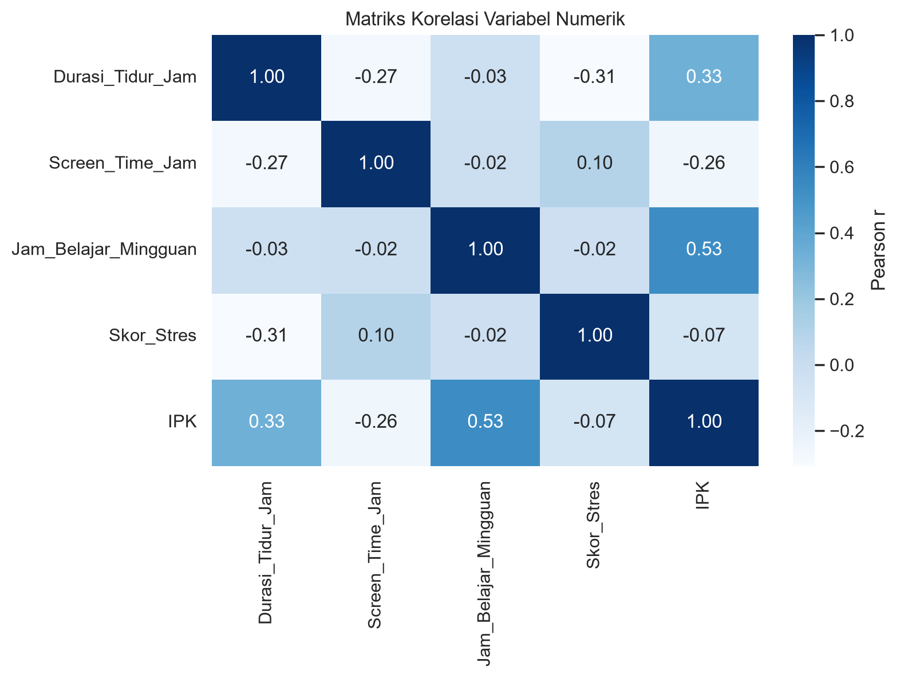

Jumlah Responden per Fakultas
Konsumsi Kafein
Durasi Tidur vs Skor Stres
IPK & Stres per Fakultas
Matriks Korelasi Variabel Numerik

Ringkasan per Fakultas
| Fakultas | n | Tidur (jam) | Skor stres | IPK |
|---|
Analytics Dashboard · Kelompok 23 · Tema C · Statistika Probabilitas

| Fakultas | n | Tidur (jam) | Skor stres | IPK |
|---|